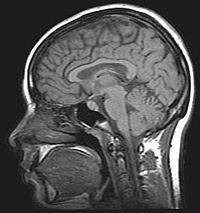
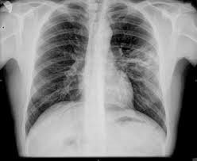
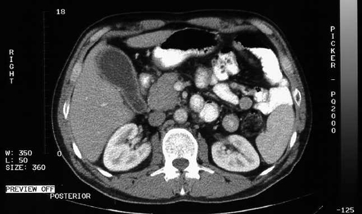
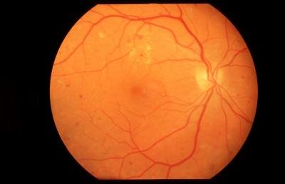
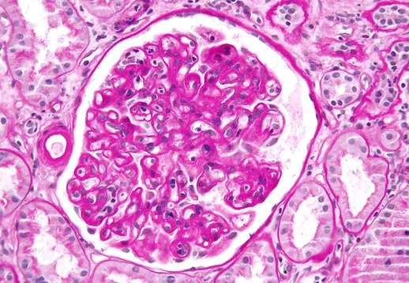

ESTÁNDAR
MIDS — Medical Imaging Data Structure
Sistema de organización de imágenes médicas derivado del estándar BIDS (Brain Imaging Data Structure): BIDS se centra en establecer reglas para almacenar datos médicos cerebrales; MIDS integra otras partes del cuerpo y otras modalidades de imagen bajo el mismo estándar.
Ver MIDS / XNAT2MIDS en GitHub ↗
Estructura de carpetas
Modalidades soportadas

MRI
Estructural, funcional, difusión y espectroscopía.

RX
Radiología convencional y proyecciones estándar.

CT
Series volumétricas con reconstrucciones 3D.

OCT
Retinografía, autofluorescencia y OCT.

AP
Imagen microscópica de tejidos teñidos.
Ejemplo práctico
De fotografías retinales sin estructurar a MIDS
Caso de uso real que muestra cómo un conjunto no estructurado de imágenes DICOM se transforma, mediante un pipeline en Python, en una estructura MIDS ordenada por sujeto y sesión.
Fotografías sin estructurar

Estructura MIDS